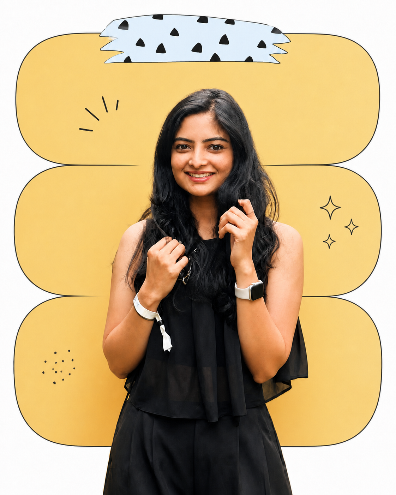

Do's of building
Team over product, data over intuition, mindful movement over thoughtless speed.

Product leader · Builder · Human
I am passionate about building products that positively impact human life. Over the course of leading zero-to-one and scaled products, I’ve learned a simple truth: building collaborative, high-agency, fun teams is often harder than building the product itself. But when you get the culture right, great products are the natural outcome of a strong foundation.
Team over product, data over intuition, mindful movement over thoughtless speed.
Compromising customer value, tolerating stakeholder arrogance, being happy with mediocrity.
Should never be your health, your peace, or the happiness of the people you love.
What I bring
The journey so far
My projects
Cult Ninja for GX users · Team goals · Corporate challenges
API integration for enterprise clients · PPS · CLP
Paytm flights
Elite Plus · Platform fees · Flight add-ons
Beyond work
Fitness enthusiast, dancer, writer, and a lifelong storyteller.